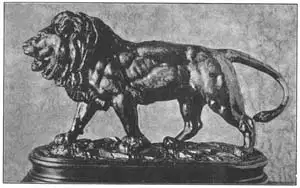
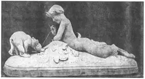
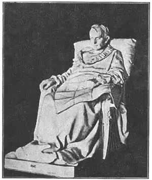

52
A LION, A SAINT, AND AN EMPEROR
狮子、圣人和国王

DO YOU like to go to the zoo? Almost everybody likes to look at animals or hunt animals or play with animals or draw animals or eat animals. A man named Barye liked to make statues of animals.
Barye lived in Paris. He worked in a jewelry shop and was a goldsmith as were so many of the Renaissance sculptors of Florence. But Barye lived much later than the Renaissance. He lived in the 1800’s.
Barye loved to go to the zoo in Paris. He used to take paper and crayons to the zoo and draw pictures of the animals. Then he would go home and make little statues of the animals he had drawn. When he was at work in the jewelry shop, he often made tiny gold animals for watch chains and necklaces and bronze animals to go on clocks. In this way Barye practised until he became the best animal sculptor of his time in the world. His lions and tigers were especially liked by Americans and on the street corners of American towns men used to sell plaster casts of Barye’s Walking Lion. Perhaps there is one of these Barye lions on the mantel-piece in your house.

No.52-1 WALKING LION（《行走的狮子》） BARYL（巴里 制）
Courtesy of the Metropolitan Museum of Art
Many of Barye’s bronzes show pain and cruelty. He seemed to like to make statues such as a tiger eating an alligator or a jaguar eating a rabbit. Very few people like to see one animal killing another. I’m sure I don’t.
Many of Barye’s bronze animals are much too small for monuments, but people call his work monumental sculpture. This means that Barye modeled his statues in the same way large monuments that you see in parks should be modeled. They are not filled with tiny details. I wonder if you would know what I meant if I told you they are heavy in shape. “Heavy in shape” doesn’t mean they are not graceful, but it does mean that a Barye bronze looks beautiful even at a distance as well as near at hand—monumental.
Almost as good as Barye at making animal statues was still another Frenchman. His name was Frémiet (Fray-mee-ay). Frémiet made many splendid statues of animals. In one called Pan and the Two Bear Cubs, Pan is having lots of fun tickling the little bears with a straw.
Frémiet began making statues of people as well as animals. His statues of men on horseback—equestrian statues—proved to be his best ones. His most famous equestrian statue is his Joan of Arc. Joan is clad in armor and holds aloft the flag of the King of France as she leads the king’s soldiers to battle.

No.52-2 PAN AND THE TWO BEAR CUBS（《潘和两只小熊》） FRÉMIET（弗莱米耶 制）
Frenchmen are proud of Joan of Arc. They consider her a saint. Frenchmen are proud, too, of another leader of French armies, although he certainly wasn’t a saint. His name was Napoleon.
You probably already know the story of Napoleon, the boy from Corsica who went to a military school, became a lieutenant in the French army, then a famous and successful general. He made himself Emperor of France and became the most powerful man of his time in all the world. At last he was defeated and went to live on Elba, an island in the Mediterranean. From Elba he suddenly returned to France. His old soldiers rallied round him. He raised an army to fight the English and the Prussians. He was beaten at the battle of Waterloo and sent to the island of St. Helena, far away in the South Atlantic Ocean. There Napoleon spent the last six years of his life longing to return to lead his armies once more to victory. And there he died.
This statue shows Napoleon at St. Helena, a map of Europe spread on his knees, one hand clenched in rage at his loss of power, the other hand loosely open, showing how hopeless he feels his chance of returning is.
The statue was done by a sculptor named Vincenzio Vela, who was born in Switzerland. Do you like it? It is called a dramatic statue because it shows something happening. It is not just Napoleon, but Napoleon wishing to return and win back his past glory.

No.52-3 THE LAST DAYS OF NAPOLEON
（《拿破仑最后的日子》）
VELA（贝拉 制）
【中文阅读】
你喜欢逛动物园吗？几乎所有的人都喜欢看动物，但有人喜欢狩猎，有人喜欢和动物一起玩，也有人喜欢画动物，还有人喜欢吃动物的肉。一个叫巴里的人却喜欢雕刻动物像。
巴里生活在法国，他在一个珠宝店里工作。同文艺复兴时期佛罗伦萨很多雕刻家一样，巴里也是个金匠。他生活的时代比文艺复兴晚很多，大约在18世纪。
巴里非常喜欢逛巴黎的动物园。他总是拿着画纸画笔给动物园里的动物画画。回家后，他就按照画像刻出小型的动物雕像。他在珠宝店工作时，经常用金子给手表链和项链做一些动物像小配饰，或者做一些跟钟表相配的青铜动物像。巴里就用这种方式不断地学习雕刻，直到后来他成为当时世界上最棒的雕刻家。他的狮子和老虎雕像尤其受美国人喜爱。美国的角角落落都有人在卖巴里雕刻的《行走的狮子》的石膏模型。或许在你家的壁炉上就放着巴里的一尊狮子像。
巴里的许多青铜动物像展示的都是痛苦与残忍的场景。他似乎很喜欢制作这样的雕像，譬如老虎吞噬鳄鱼、美洲虎吞食兔子等。很少有人喜欢看刻画动物·互相残杀的雕像。我可以肯定我不喜欢。
相对纪念碑而言，巴里的青铜动物像实在太小了，但是人们却喜欢把他的作品称作“纪念碑式的雕像”，意思是巴里做雕像模型的方式与你在公园里看到的制作纪念碑的方式是一样的。这两种雕像都不注重那些微不足道的细节。如果我说你体形厚重，不知道你能否明白其中之意。“体形厚重”并不是说它们不优美，只是说无论是远观还是近看，巴里的青铜动物像看起来都很漂亮。这就是所谓的“纪念碑式的”的雕像。
在制作动物雕像方面，还有一个法国人能够与巴里相媲美。他叫弗莱米耶。他雕刻了许多很棒的动物像。其中有座雕像叫做《潘和两只小熊》，雕像上潘正在用一根稻草挑弄两只小熊仔，潘真的是乐在其中啊。
弗莱米耶一开始既刻动物像，也雕人物像。后来证明，他雕刻的骑马像才是最好的作品，其中最为著名的要数他的《圣女贞德》雕像了。贞德身披盔甲，高举印有法王画像的旗帜，领导国王的军队英勇参战。
圣女贞德是法国人引以为豪的一个人物。法国人认为她是圣人。此外法国人还以另外一个法国将领为荣，尽管此人并非圣人，他就是拿破仑。
大家可能已经了解了拿破仑的故事。这个来自科西嘉岛的男孩子9岁时便到军校学习，在法军当中尉，后来成为功成名就的将军。最后，他登上王位，成为当时世界上最有权威的人。但是，他最终被打败了，并且被流放到地中海的一个小岛——厄尔巴岛上。突然，拿破仑逃出厄尔巴岛，回到法国。他曾经的旧部集结其麾下，他兴起一队人马同英军和普鲁士军作战。但他却惨败于滑铁卢之战，并被流放到遥远的南大西洋圣赫勒拿岛。拿破仑在岛上度过了他生命中的最后六个年头，但这期间他还幻想着重整旗鼓，再创辉煌。但他却死在岛上。
下面的雕像图正是圣赫勒拿岛上的拿破仑，他大腿上摊着一幅欧洲地图。因为权利的丧失，他的一只手愤怒地握紧拳头，而另一只手却松着，这表明他已经彻底绝望了。
这座雕像是由一个名叫文森西奥·贝拉的瑞士雕刻家制作的。你喜欢这座雕像吗？它被称作一尊“充满戏剧化”的雕像，因为它向人们展示了当时发生的事件。它刻画的不仅仅是拿破仑本人，还有他重拾昔日辉煌的心愿。